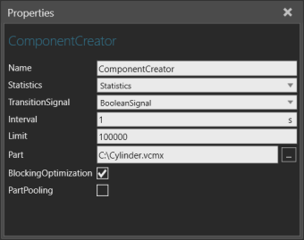
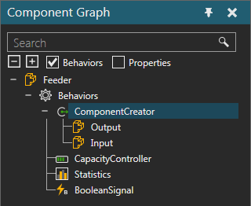

A Component Creator allows you to use a component as a template for creating new components during a simulation.

The ports of a Component Creator are listed with the behavior in the Component Graph panel.

| Name | Description |
| Name | Defines the name of the creator. |
| Statistics | Defines the Statistics behavior that collects statistics generated by the creator. |
| TransitionSignal | Defines a Boolean Signal to signal the arrival and departure of a component in the creator. A True value signals the arrival of a component. A False value signals the departure of a component. |
| Interval | Defines an interval (in seconds) for creating the creator's Part. |
| Limit | Defines the maximum amount of components the creator can generate for its Part. You can set Limit to zero, and then use a Python Script to manually control the creation of the creator's Part. |
| Part | Defines the component to use as a template for creating new
components. You can define a URI that points to a component file
or reference a component's VCID using the following syntax:
vcid:[the component's vcid]. |
| BlockingOptimization | Turns on/off the optimization of creator when making new components, thereby improving simulation performance. If True, the creator will not check for capacity rather listen for event. The creator is informed, for example by component or capacity controller, when there is capacity to make a new component. |
| PartPooling | Turns on/off the reuse of components made by the creator, thereby improving simulation performance. If True, dynamic components removed during simulation are recirculated to make new components, thereby reducing memory allocation. Caution: Be careful when recirculating components that were modified during simulation, for example a change in node material. |